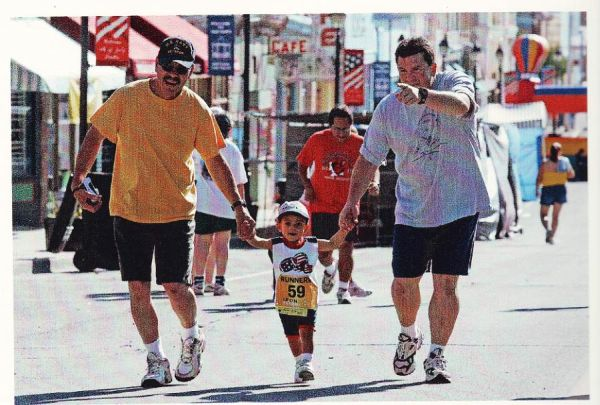

THE LAS VEGAS (NM) FIESTA MEMORIAL RUN 2017

CORPORATE SPONSOR

www.lvfiestarun.com
LAS VEGAS, NEW MEXICO
Sunday, July 2, 2017
RACE RESULTS 2017
5k run by age group
5k run overall
10k run by age group
10k run overall
5k walk overall
One person's experience of the 2017 run (video)
RACE RESULTS 2015
5k run by age group
5k run overall
10k run by age group
10k run overall
5k walk overall
--- note and photos from earlier years--
FRIDAY, JULY 4, 2014
THANK YOU FOR ANOTHER SUCCESSFUL AND WONDERFUL EVENT!
2013 Race Results
10K run by age group
10k run overall
5k run by age group
5k run overall
5k walk by age group
5k walk overall
(Previous years' information below....)
2012 Race Results (PDF)
5K walk overall 5K walk by age group
5K run overall 5K run by age group
10K run overall 10K run by age group
(May need to press "shift" while clicking these links)
See 2012 race day photos 2011 photos
Photos by Max Mujynya (c) (May need to press "shift" while clicking these links)
2011 RACE RESULTS AT BOTTOM OF PAGE

Please download and print info/entry form
Professional photos by Max of each runner will be available at no charge.

PHOTOS
Professional photos by Max of each runner will be available at no charge.
Media - contact bluecanyon2 -at- juno.com to request full-size files


2011 RACE RESULTS
LV 5K Memorial Run/Walk 7/3/2011
Place Overall Results
Time Age LastName FirstName Bib # Gender City State
5K Run
Tot M F
1 1 0:16:19 36 Gonzales Salomon 359 M Rio Rancho NM
2 2 0:16:23 22 Sanchez Dion 358 M Las Vegas NM
3 3 0:16:59 16 Chavez Alonzo 348 M Buena Vista NM
4 4 0:17:29 18 Padilla Aaron 354 M Las Vegas NM
5 5 0:18:17 18 Santistevan Daniel 388 M Santa Cruz NM
6 6 0:18:21 14 Coca Moises 307 M Montezuma NM
7 7 0:18:25 16 Darras Rafael 312 M Las Vegas NM
8 1 0:18:25 19 Ghabbour Marina 454 F Montezuma NM
9 8 0:19:37 15 Beck Corey 303 M Albuquerque NM
10 9 0:20:02 49 Nieto Jerry 352 M Albuquerque NM
11 10 0:20:34 31 Aragon Jason 346 M Albuquerque NM
12 11 0:20:55 22 Montano Estevan 364 M Montezuma NM
13 12 0:21:15 20 Brisco Donnie 372 M Montezuma NM
14 2 0:21:16 18 Ortzow Amanda 460 F Sapello NM
15 13 0:21:18 14 Atencio Conrad 350 M Las Vegas NM
16 14 0:21:19 29 Sisneros Rubin 337 M Raton NM
17 3 0:21:20 42 Browne Mariam 459 F Santa Fe NM
18 15 0:21:24 39 Bagwell Paul 302 M Las Vegas NM
19 16 0:21:28 21 Crespin Arturo 310 M Las Vegas NM
20 17 0:21:37 15 Montano Joseph 378 M Las Vegas NM
21 18 0:21:37 19 Romero Cody 395 M Vista NM
22 4 0:21:44 15 Montano Karlene 419 F Las Vegas NM
23 19 0:22:23 24 Romero Andrew 331 M Mora NM
24 20 0:22:26 13 Baca Terrance 365 M Las Vegas NM
25 21 0:22:40 54 Montoya John 379 M Raton NM
26 5 0:22:46 22 Dale Leeanna 444 F Las Vegas NM
27 22 0:22:59 35 Dague Chris 371 M Montezuma NM
28 23 0:23:02 22 Garcia Marcus 314 M Las Vegas NM
29 6 0:23:03 30 Martinez Desiree 417 F Las Vegas NM
30 24 0:23:16 31 Blea Gino 381 M Albuquerque NM
31 25 0:23:27 54 Ortiz Victor 382 M Rowe NM
32 26 0:23:35 15 Romero Leonard 383 M Las Vegas NM
33 7 0:23:38 15 Garduno Esperanza 457 F Las Vegas NM
34 8 0:24:11 42 Naranjo Dusty 474 F
35 27 0:24:18 19 Sanchez Andrew 356 M Las Vegas NM
36 28 0:24:31 38 Mondragon Ben 387 M Las Vegas NM
37 9 0:24:35 27 Montano Martha 469 F Santa Fe NM
38 29 0:24:42 30 Serna Ricky 336 M Las Vegas NM
39 10 0:24:43 21 Martinez Amelia 449 F Las Vegas NM
40 30 0:24:47 29 Santos Ben 390 M Las Vegas NM
41 11 0:24:50 48 Herrera Linda 411 F Long Beach CA
42 31 0:24:52 58 Hays Bill 347 M Grand Junction CO
43 32 0:25:01 40 Gurule James 370 M Penasco NM
44 33 0:25:13 25 Lovato Eric-Lee 362 M Las Vegas NM
45 34 0:25:17 27 Coca Reyes 309 M Las Vegas NM
46 12 0:25:19 26 Gutierrez Regina 409 F Las Vegas NM
47 35 0:25:28 29 Trujillo Christopher 341 M Laveen AZ
48 13 0:25:30 14 Trujillo Celeste 451 F Las Vegas NM
49 36 0:25:32 50 Coca Gilbert 306 M Montezuma NM
50 14 0:25:35 47 Moore Charlotte 420 F Las Vegas NM
51 37 0:25:42 47 Ortega Raul 328 M Las Vegas NM
52 15 0:25:56 46 Meyer Marlene 470 F Las Vegas NM
53 16 0:26:01 16 Atencio Genevieve 462 F Las Vegas NM
54 38 0:26:06 60 Chavez Miguel 305 M Las Vegas NM
55 39 0:26:18 9 Hutchinson James 319 M Las Vegas NM
56 40 0:26:21 49 Sanchez Tim 351 M Las Vegas NM
57 41 0:26:28 29 Gold Ivan 367 M Las Vegas NM
58 42 0:26:36 65 Miller Franklin 326 M Las Vegas NM
59 17 0:26:41 47 Martinez Mary Catheri 467 F Las Vegas NM
60 18 0:26:41 43 Estrada Carol 465 F Las Vegas NM
61 19 0:26:50 40 Baumeister Angela 447 F Las Vegas NM
62 43 0:27:12 59 Martinez John 355 M Las Vegas NM
63 20 0:27:13 23 Blea Mia 463 F Las Vegas NM
64 44 0:27:28 37 Trujillo Chris 368 M Las Vegas NM
65 45 0:27:33 55 Gold Charlie 315 M Las Vegas NM
66 46 0:27:37 47 Trujillo Max II 342 M Las Vegas NM
67 21 0:27:44 28 Armijo Leona 479 F Las Vegas NM
68 22 0:27:46 31 Skan Danielle 429 F Santa Fe NM
69 47 0:27:46 42 Sanchez Henry 386 M Las Vegas NM
70 48 0:27:47 33 Skan Eric 338 M Santa Fe NM
71 23 0:27:51 43 Romero Eva 423 F Las Vegas NM
72 24 0:27:55 16 Silva Felicia 476 F Las Vegas NM
73 49 0:28:09 15 Kjelstrom Caetano 320 M Las Vegas NM
74 25 0:28:10 15 Hutchinson Rebekah 414 F Las Vegas NM
75 50 0:28:12 68 Crutchfield Merle 311 M Las Vegas NM
76 51 0:28:14 62 Elliott David 360 M Las Vegas NM
77 52 0:28:17 25 Melton Noah 325 M Las Vegas NM
78 53 0:28:22 24 Baca Jonathan 385 M Las Vegas NM
79 26 0:28:28 21 Trujillo Val 477 F Las Vegas NM
80 27 0:28:32 24 Velarde Natasha 452 F Las Vegas NM
81 28 0:28:33 17 Martinez Nina 445 F Las Vegas NM
82 29 0:28:34 54 Ximenez Andrea 448 F Las Vegas NM
83 54 0:28:37 42 Sanchez Raymond 334 M Las Vegas NM
84 30 0:28:41 55 Topping Karen 431 F Las Vegas NM
85 55 0:28:43 31 Montgomery Dustin 327 M Albuquerque NM
86 31 0:28:46 50 Davenport Beth 466 F Santa Fe NM
87 56 0:28:50 44 Fragua Tony 366 M Belen NM
88 32 0:28:53 43 Alcon Carmela 402 F Los Alamos NM
89 33 0:28:54 32 Abreu Andrea 401 F Albuquerque NM
90 57 0:28:59 40 Wingo C.Ray 377 M Raton NM
91 34 0:29:15 31 Whalen Yolanda 446 F Gilbert AZ
92 58 0:29:16 50 Santillanes Harold 335 M Las Vegas NM
93 59 0:29:18 56 Chavez Michael 345 M Artesia NM
94 60 0:29:19 43 Vigil Dave 389 M Albuquerque NM
95 35 0:29:20 39 Maestas Veronica 415 F Las Vegas NM
96 61 0:29:22 36 Martinez Vidal 323 M Las Vegas NM
97 62 0:29:24 28 Chavez Michael 304 M Las Vegas NM
98 63 0:29:31 28 Read de Alaniz David 343 M Las Vegas NM
99 36 0:29:35 34 Whiteman Rebecca 468 F Taos NM
100 37 0:29:44 14 Chavez Analisa 440 F Buena Vista NM
101 64 0:29:50 47 Flores Dwight 313 M Albuquerque NM
102 38 0:29:54 31 Craig Patricia 406 F Las Vegas NM
103 65 0:29:56 59 Coca John 308 M Las Vegas NM
104 39 0:29:59 57 Skrinar Pat 450 F Tacoma WA
105 40 0:30:04 14 Lopez Isabela 436 F Albuquerque NM
106 41 0:30:07 14 Sanchez Elena 442 F Albuquerque NM
107 66 0:30:09 32 Herrera David 317 M Las Vegas NM
108 42 0:30:10 33 Herrera Trudy 413 F Las Vegas NM
109 67 0:30:29 27 Gutierrez Samuel 316 M Santa Fe NM
110 43 0:30:29 43 Padilla Alberta 421 F Mora NM
111 44 0:30:30 32 Rivera Pamela 422 F Las Vegas NM
112 45 0:30:35 34 Barela JulieAnn 403 F Villanueva NM
113 46 0:30:44 47 Trujillo Ida 432 F Flower Mound TX
114 68 0:30:48 49 Trujillo Ruben 340 M Flower Mound TX
115 69 0:30:54 25 Padilla Mathew 329 M Las Vegas NM
116 47 0:31:00 33 Branchal Angelina 461 F Las Vegas NM
117 48 0:31:02 55 Romero Geraldine 424 F Las Vegas NM
118 49 0:31:09 44 Baca Sylvia 464 F Las Vegas NM
119 50 0:31:11 43 Melton Therese 418 F Las Vegas NM
120 51 0:31:13 48 Trujillo Beth 433 F Las Vegas NM
121 70 0:31:16 10 Browne Damian 375 M Santa Fe NM
122 71 0:31:37 62 Romero Ben 361 M Albuquerque NM
123 52 0:31:42 33 Esquibel Norma 407 F Las Vegas NM
124 53 0:31:47 44 Maestas Suzanne 437 F Las Vegas NM
125 72 0:31:58 67 Read Bob 374 M Las Vegas NM
126 54 0:32:10 44 Fragua Cathy 453 F Belen NM
127 55 0:33:02 47 Martin Loretta 416 F Las Vegas NM
128 73 0:33:13 72 Dominguez George 376 M Raton NM
129 56 0:33:28 34 Coca Darlene 405 F Albuquerque NM
130 57 0:34:23 54 Tafoya Lorraine 430 F Las Vegas NM
131 58 0:34:27 27 Santillanes Stephanie 428 F Las Vegas NM
132 59 0:34:31 26 Gutierrez Jessica 410 F Santa Fe NM
133 74 0:34:52 18 Romero Jeremy 330 M Las Vegas NM
134 60 0:35:03 23 Trujillo Christina 434 F Las Vegas NM
135 61 0:35:04 52 Hays Kathleen 441 F Grand Junction CO
136 75 0:35:39 51 Sample Peter 332 M Amarillo TX
137 76 0:36:02 58 Byrne Rick 380 M Rowe NM
138 62 0:36:02 34 German Michelle 408 F Las Vegas NM
139 77 0:36:03 42 Abreu Michael 301 M Las Vegas NM
140 78 0:37:30 37 Aragon Les 369 M Las Vegas NM
141 63 0:37:39 36 Sanchez Rosalie 427 F Las Vegas NM
142 79 0:38:07 15 Montoya Alexander 384 M Las Vegas NM
143 80 0:38:08 71 McKinstry Bill 324 M Santa Fe NM
144 81 0:38:39 12 Hutchinson Nathan 318 M Las Vegas NM
145 64 0:39:02 32 Shannon Heather 455 F Anchorage AK
146 65 0:39:03 33 Gamez Etirsa 456 F Las Vegas NM
147 82 0:39:04 32 Garcia Damon 373 M Las Vegas NM
148 83 0:39:31 67 Spencer John 339 M Sapello NM
149 66 0:40:49 53 Romo Joyce 425 F Mora NM
150 84 0:46:27 62 Homrich Bob 344 M San Antonio TX
151 67 0:46:28 57 Homrich Joan 438 F San Antonio TX
152 85 0:49:01 73 LeDoux Leroy 321 M Las Vegas NM
153 68 0:58:04 33 Konno Rebecca 478 F Las Vegas NM
|
LV 5K Memorial Run/Walk 7/3/2011
5K Run Results By Age
Age Group: 0 TO 13 Male
Place Time Age LastName FirstName Bib # Gender City State
1 0:22:26 13 Baca Terrance 365 M Las Vegas NM
2 0:26:18 9 Hutchinson James 319 M Las Vegas NM
3 0:31:16 10 Browne Damian 375 M Santa Fe NM
4 0:38:39 12 Hutchinson Nathan 318 M Las Vegas NM
Age Group: 14 TO 18 Female
Place Time Age LastName FirstName Bib # Gender City State
1 0:21:16 18 Ortzow Amanda 460 F Sapello NM
2 0:21:44 15 Montano Karlene 419 F Las Vegas NM
3 0:23:38 15 Garduno Esperanza 457 F Las Vegas NM
4 0:25:30 14 Trujillo Celeste 451 F Las Vegas NM
5 0:26:01 16 Atencio Genevieve 462 F Las Vegas NM
6 0:27:55 16 Silva Felicia 476 F Las Vegas NM
7 0:28:10 15 Hutchinson Rebekah 414 F Las Vegas NM
8 0:28:33 17 Martinez Nina 445 F Las Vegas NM
9 0:29:44 14 Chavez Analisa 440 F Buena Vista NM
10 0:30:04 14 Lopez Isabela 436 F Albuquerque NM
11 0:30:07 14 Sanchez Elena 442 F Albuquerque NM
Age Group: 14 TO 18 Male
Place Time Age LastName FirstName Bib # Gender City State
1 0:16:59 16 Chavez Alonzo 348 M Buena Vista NM
2 0:17:29 18 Padilla Aaron 354 M Las Vegas NM
3 0:18:17 18 Santistevan Daniel 388 M Santa Cruz NM
4 0:18:21 14 Coca Moises 307 M Montezuma NM
5 0:18:25 16 Darras Rafael 312 M Las Vegas NM
6 0:19:37 15 Beck Corey 303 M Albuquerque NM
7 0:21:18 14 Atencio Conrad 350 M Las Vegas NM
8 0:21:37 15 Montano Joseph 378 M Las Vegas NM
9 0:23:35 15 Romero Leonard 383 M Las Vegas NM
10 0:28:09 15 Kjelstrom Caetano 320 M Las Vegas NM
11 0:34:52 18 Romero Jeremy 330 M Las Vegas NM
12 0:38:07 15 Montoya Alexander 384 M Las Vegas NM
Age Group: 19 TO 29 Female
Place Time Age LastName FirstName Bib # Gender City State
1 0:18:25 19 Ghabbour Marina 454 F Montezuma NM
2 0:22:46 22 Dale Leeanna 444 F Las Vegas NM
3 0:24:35 27 Montano Martha 469 F Santa Fe NM
4 0:24:43 21 Martinez Amelia 449 F Las Vegas NM
5 0:25:19 26 Gutierrez Regina 409 F Las Vegas NM
6 0:27:13 23 Blea Mia 463 F Las Vegas NM
7 0:27:44 28 Armijo Leona 479 F Las Vegas NM
8 0:28:28 21 Trujillo Val 477 F Las Vegas NM
9 0:28:32 24 Velarde Natasha 452 F Las Vegas NM
10 0:34:27 27 Santillanes Stephanie 428 F Las Vegas NM
11 0:34:31 26 Gutierrez Jessica 410 F Santa Fe NM
12 0:35:03 23 Trujillo Christina 434 F Las Vegas NM
Age Group: 19 TO 29 Male
Place Time Age LastName FirstName Bib # Gender City State
1 0:16:23 22 Sanchez Dion 358 M Las Vegas NM
2 0:20:55 22 Montano Estevan 364 M Montezuma NM
3 0:21:15 20 Brisco Donnie 372 M Montezuma NM
4 0:21:19 29 Sisneros Rubin 337 M Raton NM
5 0:21:28 21 Crespin Arturo 310 M Las Vegas NM
6 0:21:37 19 Romero Cody 395 M Vista NM
7 0:22:23 24 Romero Andrew 331 M Mora NM
8 0:23:02 22 Garcia Marcus 314 M Las Vegas NM
9 0:24:18 19 Sanchez Andrew 356 M Las Vegas NM
10 0:24:47 29 Santos Ben 390 M Las Vegas NM
11 0:25:13 25 Lovato Eric-Lee 362 M Las Vegas NM
12 0:25:17 27 Coca Reyes 309 M Las Vegas NM
13 0:25:28 29 Trujillo Christopher 341 M Laveen AZ
14 0:26:28 29 Gold Ivan 367 M Las Vegas NM
15 0:28:17 25 Melton Noah 325 M Las Vegas NM
16 0:28:22 24 Baca Jonathan 385 M Las Vegas NM
17 0:29:24 28 Chavez Michael 304 M Las Vegas NM
18 0:29:31 28 Read de Alan David 343 M Las Vegas NM
19 0:30:29 27 Gutierrez Samuel 316 M Santa Fe NM
20 0:30:54 25 Padilla Mathew 329 M Las Vegas NM
Age Group: 30 TO 39 Female
Place Time Age LastName FirstName Bib # Gender City State
1 0:23:03 30 Martinez Desiree 417 F Las Vegas NM
2 0:27:46 31 Skan Danielle 429 F Santa Fe NM
3 0:28:54 32 Abreu Andrea 401 F Albuquerque NM
4 0:29:15 31 Whalen Yolanda 446 F Gilbert AZ
5 0:29:20 39 Maestas Veronica 415 F Las Vegas NM
6 0:29:35 34 Whiteman Rebecca 468 F Taos NM
7 0:29:54 31 Craig Patricia 406 F Las Vegas NM
8 0:30:10 33 Herrera Trudy 413 F Las Vegas NM
9 0:30:30 32 Rivera Pamela 422 F Las Vegas NM
10 0:30:35 34 Barela JulieAnn 403 F Villanueva NM
11 0:31:00 33 Branchal Angelina 461 F Las Vegas NM
12 0:31:42 33 Esquibel Norma 407 F Las Vegas NM
13 0:33:28 34 Coca Darlene 405 F Albuquerque NM
14 0:36:02 34 German Michelle 408 F Las Vegas NM
15 0:37:39 36 Sanchez Rosalie 427 F Las Vegas NM
16 0:39:02 32 Shannon Heather 455 F Anchorage AK
17 0:39:03 33 Gamez Etirsa 456 F Las Vegas NM
18 0:58:04 33 Konno Rebecca 478 F Las Vegas NM
Age Group: 30 TO 39 Male
Place Time Age LastName FirstName Bib # Gender City State
1 0:16:19 36 Gonzales Salomon 359 M Rio Rancho NM
2 0:20:34 31 Aragon Jason 346 M Albuquerque NM
3 0:21:24 39 Bagwell Paul 302 M Las Vegas NM
4 0:22:59 35 Dague Chris 371 M Montezuma NM
5 0:23:16 31 Blea Gino 381 M Albuquerque NM
6 0:24:31 38 Mondragon Ben 387 M Las Vegas NM
7 0:24:42 30 Serna Ricky 336 M Las Vegas NM
8 0:27:28 37 Trujillo Chris 368 M Las Vegas NM
9 0:27:47 33 Skan Eric 338 M Santa Fe NM
10 0:28:43 31 Montgomery Dustin 327 M Albuquerque NM
11 0:29:22 36 Martinez Vidal 323 M Las Vegas NM
12 0:30:09 32 Herrera David 317 M Las Vegas NM
13 0:37:30 37 Aragon Les 369 M Las Vegas NM
14 0:39:04 32 Garcia Damon 373 M Las Vegas NM
Age Group: 40 TO 49 Female
Place Time Age LastName FirstName Bib # Gender City State
1 0:21:20 42 Browne Mariam 459 F Santa Fe NM
2 0:24:11 42 Naranjo Dusty 474 F
3 0:24:50 48 Herrera Linda 411 F Long Beach CA
4 0:25:35 47 Moore Charlotte 420 F Las Vegas NM
5 0:25:56 46 Meyer Marlene 470 F Las Vegas NM
6 0:26:41 47 Martinez Mary Catheri 467 F Las Vegas NM
7 0:26:41 43 Estrada Carol 465 F Las Vegas NM
8 0:26:50 40 Baumeister Angela 447 F Las Vegas NM
9 0:27:51 43 Romero Eva 423 F Las Vegas NM
10 0:28:53 43 Alcon Carmela 402 F Los Alamos NM
11 0:30:29 43 Padilla Alberta 421 F Mora NM
12 0:30:44 47 Trujillo Ida 432 F Flower Moun TX
13 0:31:09 44 Baca Sylvia 464 F Las Vegas NM
14 0:31:11 43 Melton Therese 418 F Las Vegas NM
15 0:31:13 48 Trujillo Beth 433 F Las Vegas NM
16 0:31:47 44 Maestas Suzanne 437 F Las Vegas NM
17 0:32:10 44 Fragua Cathy 453 F Belen NM
18 0:33:02 47 Martin Loretta 416 F Las Vegas NM
Age Group: 40 TO 49 Male
Place Time Age LastName FirstName Bib # Gender City State
1 0:20:02 49 Nieto Jerry 352 M Albuquerque NM
2 0:25:01 40 Gurule James 370 M Penasco NM
3 0:25:42 47 Ortega Raul 328 M Las Vegas NM
4 0:26:21 49 Sanchez Tim 351 M Las Vegas NM
5 0:27:37 47 Trujillo Max II 342 M Las Vegas NM
6 0:27:46 42 Sanchez Henry 386 M Las Vegas NM
7 0:28:37 42 Sanchez Raymond 334 M Las Vegas NM
8 0:28:50 44 Fragua Tony 366 M Belen NM
9 0:28:59 40 Wingo C.Ray 377 M Raton NM
10 0:29:19 43 Vigil Dave 389 M Albuquerque NM
11 0:29:50 47 Flores Dwight 313 M Albuquerque NM
12 0:30:48 49 Trujillo Ruben 340 M Flower Moun TX
13 0:36:03 42 Abreu Michael 301 M Las Vegas NM
Age Group: 50 TO 59 Female
Place Time Age LastName FirstName Bib # Gender City State
1 0:28:34 54 Ximenez Andrea 448 F Las Vegas NM
2 0:28:41 55 Topping Karen 431 F Las Vegas NM
3 0:28:46 50 Davenport Beth 466 F Santa Fe NM
4 0:29:59 57 Skrinar Pat 450 F Tacoma WA
5 0:31:02 55 Romero Geraldine 424 F Las Vegas NM
6 0:34:23 54 Tafoya Lorraine 430 F Las Vegas NM
7 0:35:04 52 Hays Kathleen 441 F Grand Junctio CO
8 0:40:49 53 Romo Joyce 425 F Mora NM
9 0:46:28 57 Homrich Joan 438 F San Antonio TX
Age Group: 50 TO 59 Male
Place Time Age LastName FirstName Bib # Gender City State
1 0:22:40 54 Montoya John 379 M Raton NM
2 0:23:27 54 Ortiz Victor 382 M Rowe NM
3 0:24:52 58 Hays Bill 347 M Grand Junctio CO
4 0:25:32 50 Coca Gilbert 306 M Montezuma NM
5 0:27:12 59 Martinez John 355 M Las Vegas NM
6 0:27:33 55 Gold Charlie 315 M Las Vegas NM
Saturday, July 09, 2011 Page 4 of 5
5K Run Results By Age
7 0:29:16 50 Santillanes Harold 335 M Las Vegas NM
8 0:29:18 56 Chavez Michael 345 M Artesia NM
9 0:29:56 59 Coca John 308 M Las Vegas NM
10 0:35:39 51 Sample Peter 332 M Amarillo TX
11 0:36:02 58 Byrne Rick 380 M Rowe NM
Age Group: 60 TO 69 Male
Place Time Age LastName FirstName Bib # Gender City State
1 0:26:06 60 Chavez Miguel 305 M Las Vegas NM
2 0:26:36 65 Miller Franklin 326 M Las Vegas NM
3 0:28:12 68 Crutchfield Merle 311 M Las Vegas NM
4 0:28:14 62 Elliott David 360 M Las Vegas NM
5 0:31:37 62 Romero Ben 361 M Albuquerque NM
6 0:31:58 67 Read Bob 374 M Las Vegas NM
7 0:39:31 67 Spencer John 339 M Sapello NM
8 0:46:27 62 Homrich Bob 344 M San Antonio TX
Age Group: 70 TO 98 Male
Place Time Age LastName FirstName Bib # Gender City State
1 0:33:13 72 Dominguez George 376 M Raton NM
2 0:38:08 71 McKinstry Bill 324 M Santa Fe NM
3 0:49:01 73 LeDoux Leroy 321 M Las Vegas NM
|
LV 10K Memorial Run 7/3/2011
Place Overall Results
Tot M F Time Age LastName FirstName Bib # Gender City State
1 1 0:33:04 17 Varela Antonio 126 M Pecos NM
2 2 0:33:11 19 Lueras Justin 129 M Los Lunas NM
3 3 0:33:26 19 Chavez Henrique 125 M Buena Vista NM
4 4 0:33:27 23 Samano Ismael 142 M Las Vegas NM
5 5 0:33:57 20 Lueras Patrick 130 M Los Lunas NM
6 6 0:34:42 22 Ortiz Patrick 146 M Rowe NM
7 7 0:34:44 21 Vogel Ralph 138 M Montezuma NM
8 8 0:35:33 19 Stafford Sherman 137 M Montezuma NM
9 9 0:37:04 42 Hutchinson Dan 106 M Las Vegas NM
10 10 0:41:15 28 Escutia Daniel 141 M Holman NM
11 11 0:41:22 55 Crowley Mark 128 M Albuquerque NM
12 12 0:43:04 54 Garcia Johnny Ray 102 M Raton NM
13 13 0:43:12 30 Barreras Lawrence 135 M Albuquerque NM
14 14 0:43:46 33 Estrada Andres 136 M Benbrook TX
15 15 0:45:00 26 Sisneros Andrew 149 M Las Vegas NM
16 16 0:45:47 41 Aragon John Paul 133 M Keller TX
17 17 0:46:07 49 Silva David 131 M Las Vegas NM
18 1 0:46:23 18 Romero Belen 229 F Las Vegas NM
19 2 0:46:34 46 Vigil Heidi 230 F Albuquerque NM
20 18 0:48:15 54 Romero Alex 117 M Montezuma NM
21 3 0:48:49 40 Montoya Ronell 208 F Las Vegas NM
22 19 0:48:55 16 Sanchez Marcos 127 M Albuquerque NM
23 4 0:49:19 19 Linder Katherine 204 F Las Vegas NM
24 20 0:49:49 23 Romero Darin James 120 M Las Vegas NM
25 21 0:49:54 60 Romero John 121 M Guadalupita NM
26 22 0:50:07 51 Bourbon Albert 148 M Las Vegas NM
27 23 0:50:12 63 Hughes Douglas 105 M Las Vegas NM
28 5 0:50:28 16 Silva Alisha 220 F Belen NM
29 24 0:50:31 67 Obelkevich Dave 113 M New York NY
30 25 0:50:35 17 Salman Mack 140 M Las Vegas NM
31 26 0:50:59 44 Packard Keith 143 M Las Vegas NM
32 27 0:51:13 68 Fries Jim 134 M Las Vegas NM
33 28 0:51:16 21 Trujillo Max III 124 M Las Vegas NM
34 6 0:51:28 39 Hutchinson Laurie 202 F Las Vegas NM
35 29 0:52:01 58 Romero Philip 119 M Las Vegas NM
36 30 0:52:08 16 Linder Charlie 147 M
37 7 0:52:37 24 Romero Carolyn 228 F Las Vegas NM
38 31 0:52:49 40 Owens Russell 115 M Guadalupita NM
39 8 0:52:50 40 Sanchez Susan 216 F Albuquerque NM
40 32 0:53:40 52 Romero Michael 144 M Las Vegas NM
41 33 0:54:01 48 Ortega Jerry 114 M Las Vegas NM
42 34 0:54:38 51 Nakasone Randy 112 M Las Vegas NM
43 9 0:54:43 31 Barreras Ana 223 F Albuquerque NM
44 35 0:54:52 41 Melton Mike 109 M Las Vegas NM
45 10 0:56:00 29 Arellanes Andrea 226 F Los Lunas NM
46 36 0:56:41 52 Caballero Roger 139 M Sapaello NM
47 37 0:56:47 48 Romero Dennis 118 M Las Vegas NM
48 11 0:57:28 30 Owens Andrea E. 210 F Albuquerque NM
49 12 0:57:44 18 Montoya Robin 209 F Las Vegas NM
50 13 0:58:15 26 Albert Rebekah 227 F Holman NM
51 14 0:59:13 51 Vigil JoAnn 225 F Bernallilo NM
52 38 0:59:59 17 Melton Isaiah 110 M Las Vegas NM
53 15 1:00:28 48 Salman Juli 224 F Las Vegas NM
54 16 1:01:28 51 Lopez Ruth 205 F Albuquerque NM
55 39 1:01:29 46 Lopez Maurice 108 M Albuquerque NM
56 17 1:01:33 24 Martinez Yzetta 222 F albuquerque NM
57 18 1:03:54 41 Martinez Tash 207 F Las Vegas NM
58 40 1:05:51 55 Koelsch Pete 145 M Meddota Heig MN
59 41 1:08:12 61 Pino Julian 116 M Las Vegas NM
60 42 1:09:01 64 Terr Lewis 123 M Las Vegas NM
61 19 1:11:02 57 Kelley Sandra 214 F Scottsdale AZ
62 43 1:13:11 61 Stoltze David 122 M Las Vegas NM
63 44 1:14:48 12 Juarez Adan 107 M Las Vegas NM
64 20 1:18:40 61 Pino Margaret 211 F Las Vegas NM
65 21 1:22:15 70 Dominguez Lyn 201 F New York NY
66 45 1:29:30 64 Cortez Alex 101 M Raton NM
67 46 1:30:39 63 Goebel Mark 103 M Montezuma NM
|
LV 10K Memorial Run 7/3/2011
Results By Age
Age Group: 0 TO 13 Male
Place Time Age LastName FirstName Bib # Gender City State
1 1:14:48 12 Juarez Adan 107 M Las Vegas NM
Age Group: 14 TO 18 Female
Place Time Age LastName FirstName Bib # Gender City State
1 0:46:23 18 Romero Belen 229 F Las Vegas NM
2 0:50:28 16 Silva Alisha 220 F Belen NM
3 0:57:44 18 Montoya Robin 209 F Las Vegas NM
Age Group: 14 TO 18 Male
Place Time Age LastName FirstName Bib # Gender City State
1 0:33:04 17 Varela Antonio 126 M Pecos NM
2 0:48:55 16 Sanchez Marcos 127 M Albuquerque NM
3 0:50:35 17 Salman Mack 140 M Las Vegas NM
4 0:52:08 16 Linder Charlie 147 M
5 0:59:59 17 Melton Isaiah 110 M Las Vegas NM
Age Group: 19 TO 29 Female
Place Time Age LastName FirstName Bib # Gender City State
1 0:49:19 19 Linder Katherine 204 F Las Vegas NM
2 0:52:37 24 Romero Carolyn 228 F Las Vegas NM
3 0:56:00 29 Arellanes Andrea 226 F Los Lunas NM
4 0:58:15 26 Albert Rebekah 227 F Holman NM
5 1:01:33 24 Martinez Yzetta 222 F albuquerque NM
Age Group: 19 TO 29 Male
Place Time Age LastName FirstName Bib # Gender City State
1 0:33:11 19 Lueras Justin 129 M Los Lunas NM
2 0:33:26 19 Chavez Henrique 125 M Buena Vista NM
3 0:33:27 23 Samano Ismael 142 M Las Vegas NM
4 0:33:57 20 Lueras Patrick 130 M Los Lunas NM
5 0:34:42 22 Ortiz Patrick 146 M Rowe NM
6 0:34:44 21 Vogel Ralph 138 M Montezuma NM
7 0:35:33 19 Stafford Sherman 137 M Montezuma NM
8 0:41:15 28 Escutia Daniel 141 M Holman NM
9 0:45:00 26 Sisneros Andrew 149 M Las Vegas NM
10 0:49:49 23 Romero Darin James 120 M Las Vegas NM
11 0:51:16 21 Trujillo Max III 124 M Las Vegas NM
Age Group: 30 TO 39 Female
Place Time Age LastName FirstName Bib # Gender City State
1 0:51:28 39 Hutchinson Laurie 202 F Las Vegas NM
2 0:54:43 31 Barreras Ana 223 F Albuquerque NM
3 0:57:28 30 Owens Andrea E. 210 F Albuquerque NM
Age Group: 30 TO 39 Male
Place Time Age LastName FirstName Bib # Gender City State
1 0:43:12 30 Barreras Lawrence 135 M Albuquerque NM
2 0:43:46 33 Estrada Andres 136 M Benbrook TX
Age Group: 40 TO 49 Female
Place Time Age LastName FirstName Bib # Gender City State
1 0:46:34 46 Vigil Heidi 230 F Albuquerque NM
2 0:48:49 40 Montoya Ronell 208 F Las Vegas NM
3 0:52:50 40 Sanchez Susan 216 F Albuquerque NM
4 1:00:28 48 Salman Juli 224 F Las Vegas NM
5 1:03:54 41 Martinez Tash 207 F Las Vegas NM
Age Group: 40 TO 49 Male
Place Time Age LastName FirstName Bib # Gender City State
1 0:37:04 42 Hutchinson Dan 106 M Las Vegas NM
2 0:45:47 41 Aragon John Paul 133 M Keller TX
3 0:46:07 49 Silva David 131 M Las Vegas NM
4 0:50:59 44 Packard Keith 143 M Las Vegas NM
5 0:52:49 40 Owens Russell 115 M Guadalupita NM
6 0:54:01 48 Ortega Jerry 114 M Las Vegas NM
7 0:54:52 41 Melton Mike 109 M Las Vegas NM
8 0:56:47 48 Romero Dennis 118 M Las Vegas NM
9 1:01:29 46 Lopez Maurice 108 M Albuquerque NM
Age Group: 50 TO 59 Female
Place Time Age LastName FirstName Bib # Gender City State
1 0:59:13 51 Vigil JoAnn 225 F Bernallilo NM
2 1:01:28 51 Lopez Ruth 205 F Albuquerque NM
3 1:11:02 57 Kelley Sandra 214 F Scottsdale AZ
Age Group: 50 TO 59 Male
Place Time Age LastName FirstName Bib # Gender City State
1 0:41:22 55 Crowley Mark 128 M Albuquerque NM
2 0:43:04 54 Garcia Johnny Ray 102 M Raton NM
3 0:48:15 54 Romero Alex 117 M Montezuma NM
4 0:50:07 51 Bourbon Albert 148 M Las Vegas NM
5 0:52:01 58 Romero Philip 119 M Las Vegas NM
6 0:53:40 52 Romero Michael 144 M Las Vegas NM
7 0:54:38 51 Nakasone Randy 112 M Las Vegas NM
8 0:56:41 52 Caballero Roger 139 M Sapaello NM
9 1:05:51 55 Koelsch Pete 145 M Meddota Heig MN
Age Group: 60 TO 69 Female
Place Time Age LastName FirstName Bib # Gender City State
1 1:18:40 61 Pino Margaret 211 F Las Vegas NM
Age Group: 60 TO 69 Male
Place Time Age LastName FirstName Bib # Gender City State
1 0:49:54 60 Romero John 121 M Guadalupita NM
2 0:50:12 63 Hughes Douglas 105 M Las Vegas NM
3 0:50:31 67 Obelkevich Dave 113 M New York NY
4 0:51:13 68 Fries Jim 134 M Las Vegas NM
5 1:08:12 61 Pino Julian 116 M Las Vegas NM
6 1:09:01 64 Terr Lewis 123 M Las Vegas NM
7 1:13:11 61 Stoltze David 122 M Las Vegas NM
8 1:29:30 64 Cortez Alex 101 M Raton NM
9 1:30:39 63 Goebel Mark 103 M Montezuma NM
Age Group: 70 TO 98 Female
Place Time Age LastName FirstName Bib # Gender City State
1 1:22:15 70 Dominguez Lyn 201 F New York NY |
| |